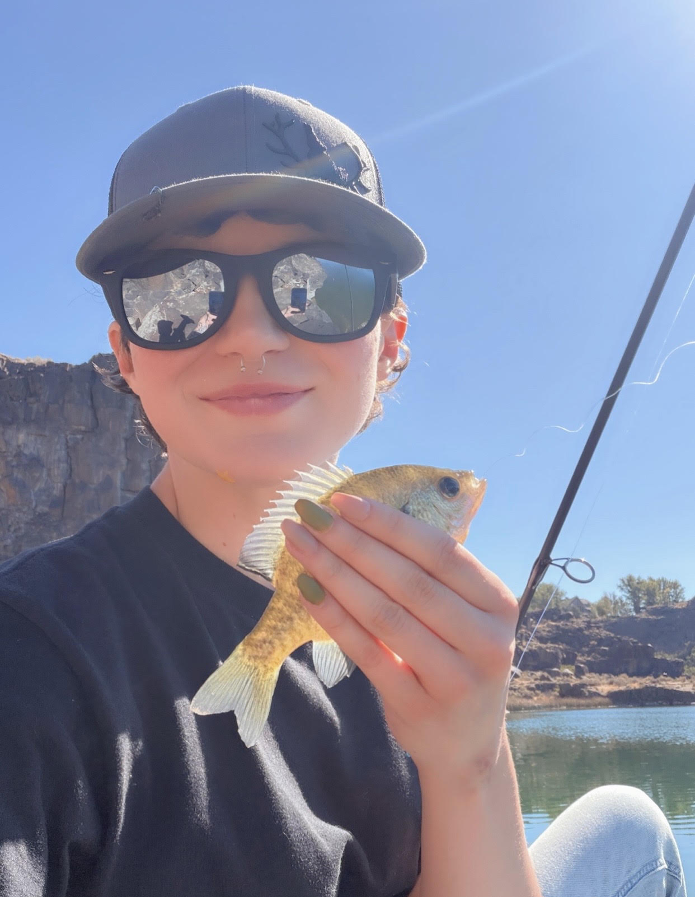
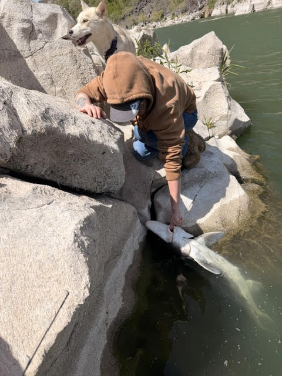
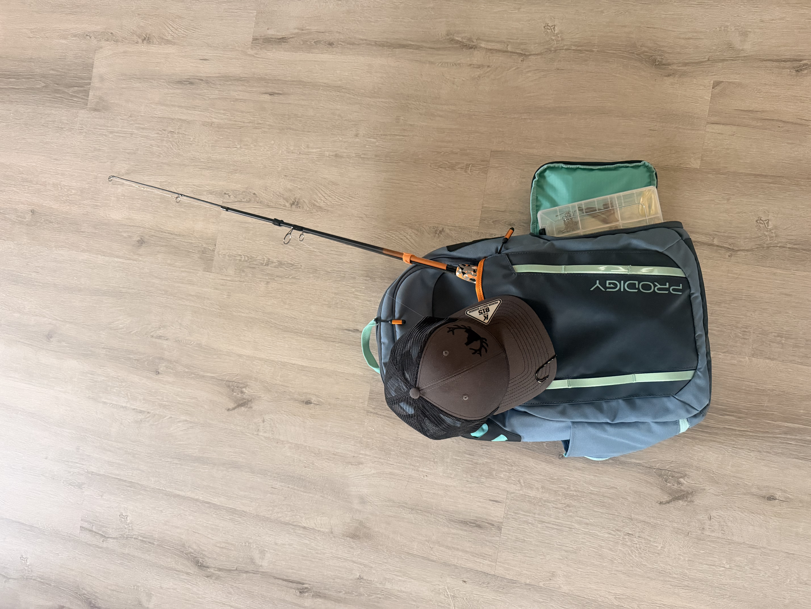
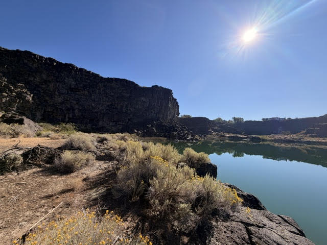

My First Bluegill!

This was my first bluegill catch on 09/09/26 at Dierke's!
My First Sturgeon!

I accidentally caught this baby sturgeon by Auger Falls on 04/26/26 with a worm as bait!
My On the Go Fishing Gear!

This is the gear I use for my fishing adventures! I keep it in my car for spontaneous trips!
My Favorite Fishing Spot!

This is a secluded fishing spot at Dierke's. I have to hike along the canyon wall and climb over rocks to reach it!